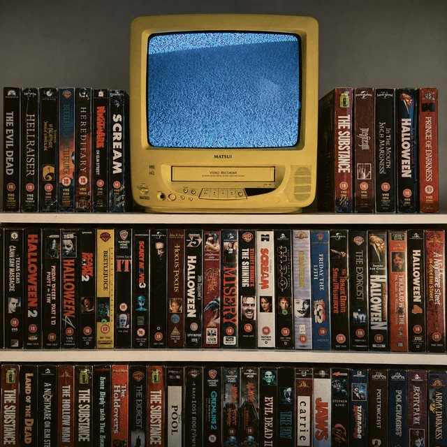

The Eclectic Polymath Podcast · Archive
#036: How Genres Are Born: From Greek Philosophy to Digital Storytelling

About this episode
Genres can feel natural, like stories have always belonged in clear categories, but every genre is really a system built by culture, technology, audience expectation, and creative rebellion.
This episode traces the evolution of narrative genres from classical Greek ideas about tragedy, comedy, and human nature to the modern worlds of science fiction, detective stories, fantasy, horror, romance, streaming, games, and digital storytelling.
We look at how major social and technological shifts created new forms, how writers bend and break genre rules, and why genres survive by adapting to the anxieties, desires, and platforms of their time.
Key points
- Genres can feel natural, like stories have always belonged in clear categories, but every genre is really a system built by culture, technology, audience expectation, and creative rebellion.
- This episode traces the evolution of narrative genres from classical Greek ideas about tragedy, comedy, and human nature to the modern worlds of science fiction, detective stories, fantasy, horror, romance, streaming, games, and digital storytelling.
- From Aristotle to algorithms, this is a story about how storytelling categories become shared contracts, and how those contracts keep changing whenever culture needs new ways to imagine itself.